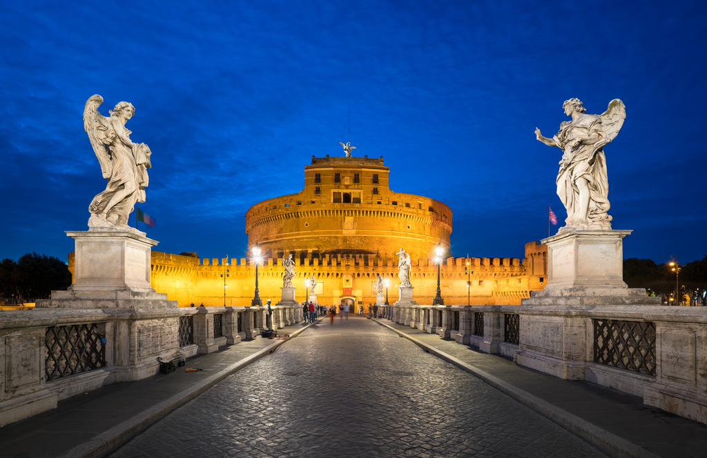
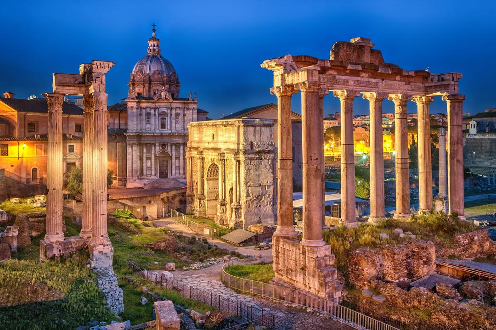
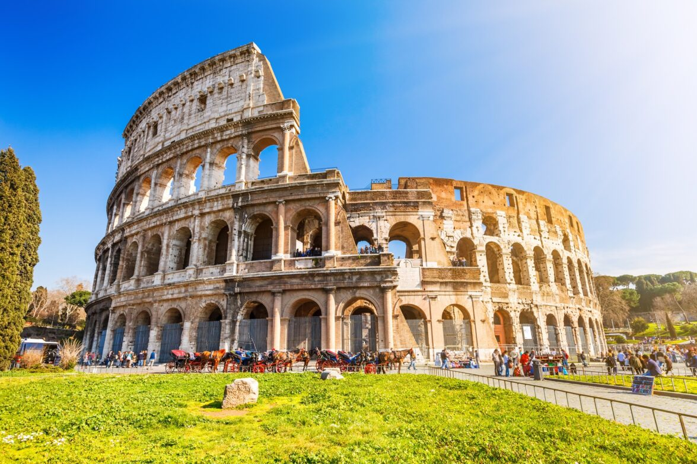
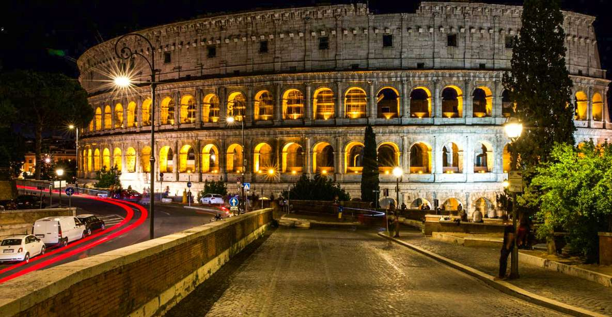
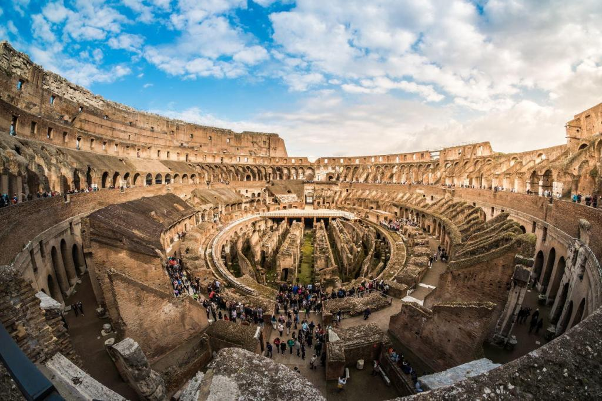
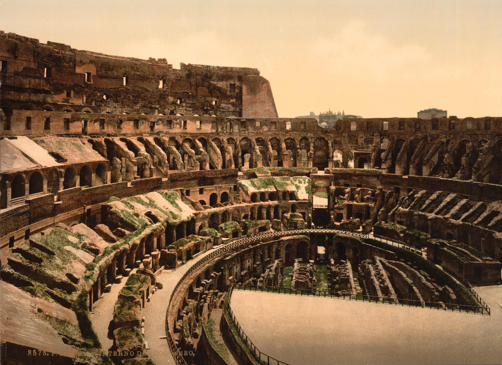

|
 |
|  |  |
Rome
Rome was called the “Eternal City” by the ancient Romans because they believed that no matter what happened in the rest of the world, the city of Rome would always remain standing. Exploring the city center by foot surrounded by glorious monuments and colossal remains takes you back in time to the “glory that was Rome”.
Rome is a city of contrasts. From the Vatican City, the seat of the Roman Catholic Church to the ancient ruins of the Roman Forum and the Colosseum, Rome is a city that is proud of its ancient glorious heritage. The city is also proud of its modern and vibrant living with open-air markets, stunning artistic fountains, and great food.
Rome is a city of romance, a city of history, and a city of culture. It is an enchanting place to visit and is a truly unforgettable city to visit. Rome, the city of seven hills, enjoyed a mythic beginning. Romulus and Remus — twin brothers who were nursed by a she-wolf and fathered by a war god — reportedly founded the Eternal City. And although historians are a little skeptical about this epic entry into the world, most travelers are absolutely certain that there is something magical about Rome.
Top Attractions in Rome
-
Coliseum The Colosseum is the main symbol of Rome. It's an imposing construction that, with almost 2,000 years of history, will bring you back in time to discover the way of life in the Roman Empire.
The construction of the Colosseum began in the year 72 under the empire of Vespasian and was finished in the year 80 during the rule of the emperor Titus. After completion, the Colosseum became the greatest Roman amphitheater, measuring 188 meters in length, 156 meters in width, and 57 meters in height. The Colosseum in Ancient Times
During the Roman Empire and under the motto of "Bread and Circuses" the Roman Colosseum (known then as Flavian Amphitheatre) allowed more than 50,000 people to enjoy its finest spectacles. The exhibitions of exotic animals, executions of prisoners, recreations of battles, and gladiator fights kept the Roman people entertained for years.
The Colosseum remained active for over 500 years. The last recorded games in history were celebrated in the 6th century.
Since the 6th century, the Colosseum has suffered lootings, earthquakes, and even bombings during World War Two. Demonstrating a great survival instinct, the Colosseum was used for decades as a storehouse, church, cemetery, and even a castle for nobility. Trivia
- The original name "Flavian Amphitheatre" was changed to the Colosseum due to the great statue of Nero that was located at the entrance of the Domus Aurea, "The Colossus of Nero". The Domus Aurea was a great palace built under the orders of Nero after the Fire of Rome.
- The emperor Titus inaugurated the Colosseum with 100 days of games, which took the lives of more than 2,000 gladiators.
- The Colosseum had a canvas ceiling to protect people from the sun. The machinery and cages were located beneath the arena.
- There are some theories that the Colosseum was filled with water for naval battle recreations, although for the moment there have not been conclusive investigations.
- Every Good Friday the Pope leads the Way of the Cross procession in the Colosseum. This place has always been closely connected with the church and on this day the early Christians that died in the arena are remembered.
